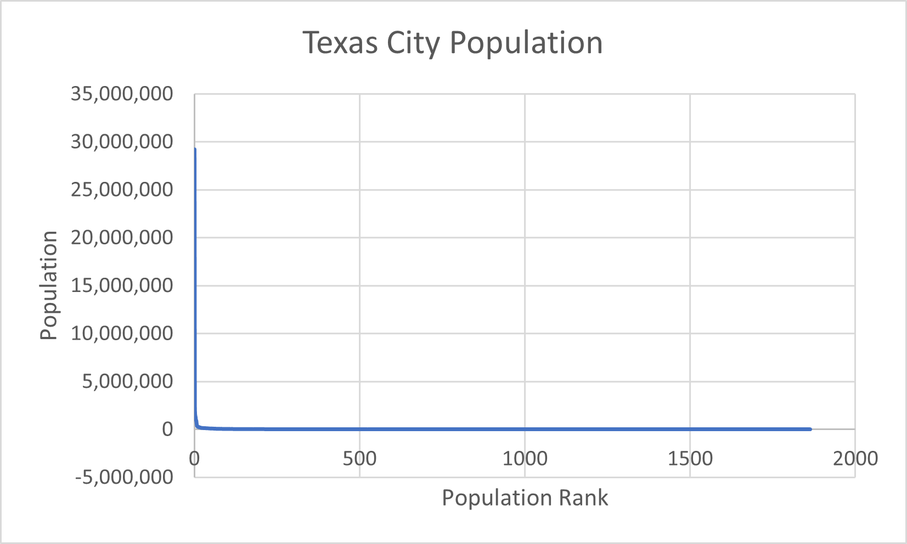

Consider the following dataset containing the population of Texas cities. Our goal is to visualize the population of Texas cities:
Data Preparation.
- Open the Excel file.
If you are opening this file for the first time, you may need to enable editing by clicking on the prompt that Excel shows at the top of the file.
- Select the population numbers you see in column F of the spreadsheet by:
- clicking on the first number you see the column (the Texas population),
- pressing and holding the
ctrlandshiftkeys on the keyboard simultaneously, - while holding the keys, pressing the arrow-down key on the keyboard.
- Now that you have selected the population data, you can copy the data by pressing and holding the
ctrlkey and pressing theCletter key. You should see the border of the selected numbers animated. - Now, open a new spreadsheet page by clicking at the
+sign you see at the end of the bottom bar in the Excel file. This action should create a new spreadsheet in the same Excel file namedSheet1. You can rename thisSheet1by double-clicking on it and giving it the new namedata. - Now, click on the new speadsheet page and paste the copied population data to column B of the spreadsheet.
If no data is pasted, you need to go back to the original spreadsheet page, copy the selection again, come back to data spreadsheet page and past it.
- Select the pasted data column by clicking on the column name B.
- Look at the top right of the Excel bar menu. You should see an option Sort & Filter in the Editing panel of the top bar. Click on Sort & Filter and select Sort Largest to Smallest. This will sort all population numbers in column B from the largest to the smallest.
- Select the first cell in column A of the spreadsheet.
Fill the cells one through four of column A with numbers
1through4respectively. Now, hold the mouse pointer on the lower-right corner of the fourth cell in column A. You should see that the mouse pointer changes to a small black+symbol, called Fill Handle. While the Fill Handle is active, double click on the lower right corner of the fourth cell. This should fill all cells in column A with sequential numbers starting from number1in the first cell.
Visualization.
- Press and hold the
ctrlkey on the keyboard and select columns A and B in the spreadsheet with your mouse. - While the data remains selected, click on the Insert tab on the top-left bar of the Excel file.
- Hover the mouse pointer on the last graphics option in the lowest-right corner of the Charts panel. This should open a new panel for scatter plot visualizations.
- Select the first graphics option in the opened panel.
This should create a visualization in the spreadsheet of Texas city populations (in column B of the spreadsheet) vs. the city IDs in column A.

- Question. Based on this plot, what is the approximate population of the $1000$th most populous city in Texas?
Visualization Transformation.
- Select the vertical axis of the line-scatter plot and right-click on it with your mouse. This should open a menu.
- Select the last option Format Axis… from the menu. This should open a new panel to the right side of the Excel file.
- You should be able to see an option named Logarithmic Scale toward the bottom of this newly-opened panel. Select this option. You should immediately see that the visualization in the plot changes.
- Question. Based on this axis-transformed plot, what is the approximate population of the $1000$th most populous city in Texas?